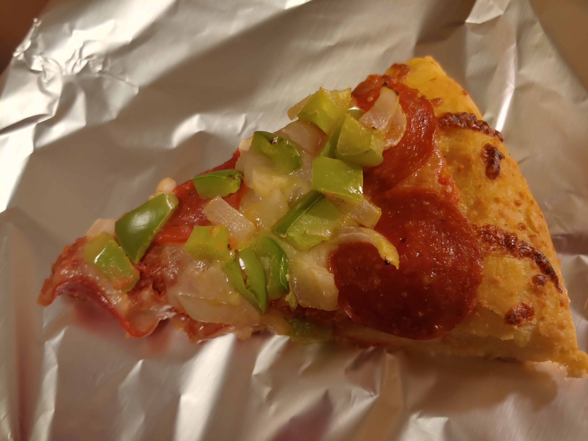
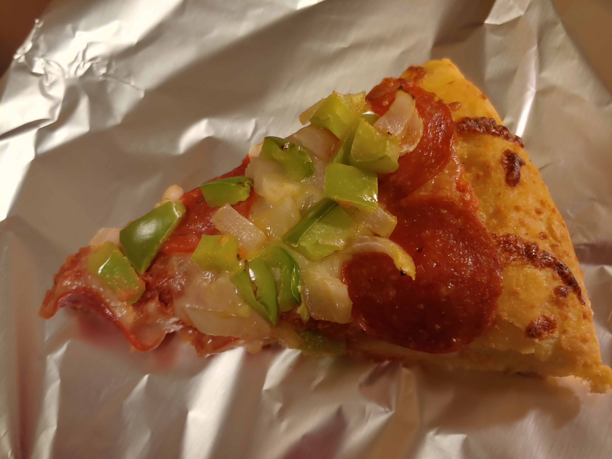
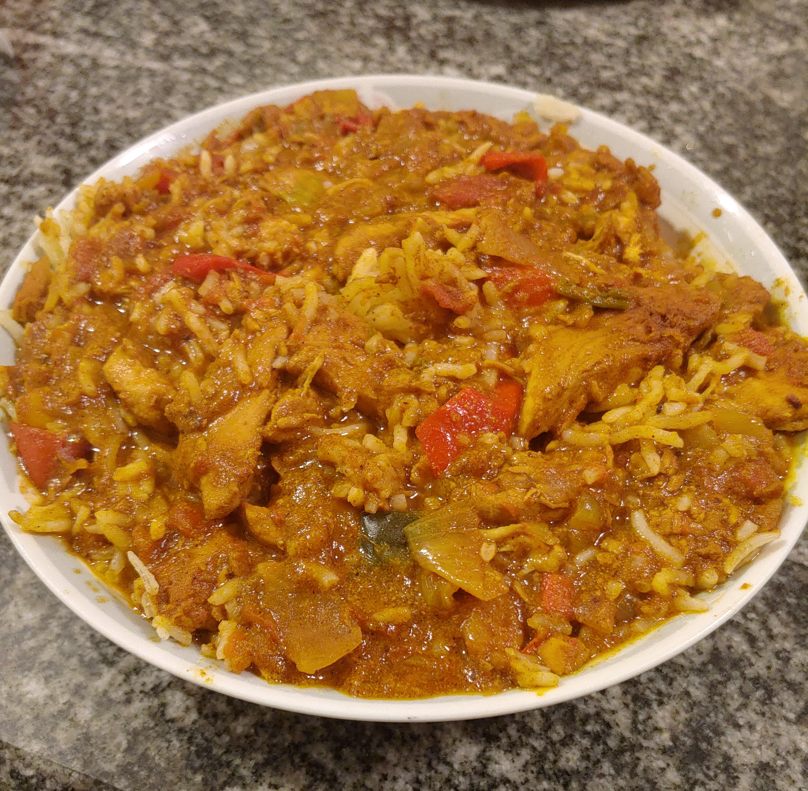

Recipes
Homemade Pizza
Origin: Friend's Recipe
Category: Main Dish

homemade_pizza.jpg
My girlfriend's mom made pizzas a long time ago and we wanted to make one from scratch. We asked her for a generic set of instructions for a basic but still good pizza. We added whatever any of us wanted as toppings and you can too!
>Recipe Ingredients
- Warm Water
- Rapid Rise Yeast
- Bread Flour
- Salt
- Cornmeal
- Olive Oil
- Canned Peeled Tomatoes
- Garlic
- Ground Black Pepper
- Granulated Sugar
- Dried Oregano
- Parmesan Cheese
- Whole Milk Mozzarella
- Pepperonis and/or other toppings
Recipe Steps
- Mix 2 cups water, 2 tsp yeast, and 2 tbsp olive oil
- Seperately, preferably in a mixer, 4 cups mix bread flour and 2 tsp salt
- Pour yeast mixture into stand mixer with the flour, knead on medium speed (dough hook works well)
- Take out dough ball, place in a lightly oiled bowl and let rise 2 hours
- "Punch" down the dough and split it in 2
- Around now would be a good time to heat up your oven (500 degrees) for a bit if you plan to use a pizza stone (heat at least 30 minutes)
- Place parchment paper on your pizza peel (or whatever you can use as a substitute) and lighty cover in cornmeal
- Stretch out dough, by hanf in the air, then place on top of cornmeal and continue stretching until satisfied
- Brush olive oil on outside edge of dough
- "Drain" your tomatoes
- Preferably in as mixer, mix tomatoes with 1 tsp oregano, 1 tsp granulated sugar, 0.25 tsp ground black pepper, 1 tsp salt, and 1 minced garlic clove
- Pour some sauce on pizza and spread it around
- Sprinkle about a half cup of parmesan around on pizza
- Put 2 cups mozzarella
- Cover with desired toppings and desired amount of each
- Cook around 12-15 minutes
Additional Food Images
 

homemade_dough.jpg
raw_pizza.jpg
pizza_slice.jpg
Alexandru Ursu
Butter Chicken
Origin: Changed a Friend's Recipe
Category: Main Dish
butter_chicken.jpg
My girlfriend's dad made butter chicken once and we've been making it from time to time ever since. We have our own set of ingridients/small changes made but its still pretty similar and very good.
>Recipe Ingredients
- Chicken Breast (1-4 pounds)
- Butter (1/4 cup per pound of chicken)
- Onions (1 per pound of chicken)
- Bell Pepper (1 per pound of chicken)
- Garlic (2 cloves per pound of chicken)
- Green onion (1 per pound of chicken)
- Diced Tomato Cans (1 per 2 pounds of chicken)
- Ginger Powder (1 tsp per pound of chicken)
- Curry Powder (2 tbsp per pound of chicken)
- Cumin (1 tsp per pound of chicken)
- Turmeric (1 tsp per pound of chicken)
- Paprika (1 tsp per pound of chicken)
- Salt (1 tsp per pound of chicken)
- Ground Pepper (1 tsp per pound of chicken)
- Optional: Make rice as well
Recipe Steps
- Clean and dice chicken
- Wash and dice onions, peppers, and green onions
- Mince garlic
- Prepare all spices by putting correct amounts in a small bowl
- In a big enough pot, melt the butter and then partially fry all of the chicken in it (no browning/crisping)
- Then add in seasonings and mix thoroughly
- Next add in all remaining ingredients and mix again
- Cover and let cook 20 minutes in medium heat
- Remove lid and cook another 20 minutes
- Optional: About 5-10 minutes before it is done, you can add plain yougurt or a similar substitute and mix in (around 1 "regular" tsp scoop per pound of chicken)
- Mix a serving in a bowl with rice if desired/made some
Additional Food Images
diced_vegetables.jpg
rice.jpg
spices.jpg
Alexandru Ursu
Roast
Origin: Family Recipe
Category: Main Dish

roast.jpg
My dad's recipe for his take on a roast that I've been having for most of my life. Very delicious and easy to make.
>Recipe Ingredients
- 3-4 Pounds Chicken Drumsticks
- 6-8 Potatoes
- 3-4 Onions
- 9-12 Carrots
- Oil
- Salt
- Pepper
- Any other spices you would deem fit for a simple dish like this
Recipe Steps
- Oil big baking pan/pot
- Put chicken in pot and leave it on the stove top on medium heat till right before they start browing
- Put rest of ingreidients in pot and put pot in oven for 30-40 minutes at 375 degrees
- Test potatoes and check a piece of chicken to make sure it is all cooked enough
Additional Food Images
montreal_seasoning.jpg
pot.jpg
roast_veggies.jpg
Alexandru Ursu